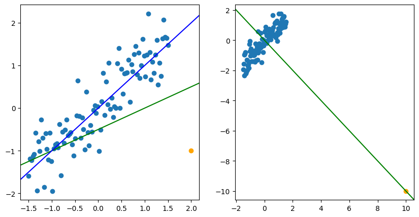

Diagnostics for Leverage and Influence
動機。 畫原始數據 對 的散佈圖時，有些點會與其他點有明顯差距：

這些點對估計結果 的影響程度不一：有些只會小幅度影響估計，有些甚至會讓估計呈現完全相反的結論。直方圖、點圖或殘差圖可以幫忙找到 outliers，但未必能找到真正有影響力的點（influential points），因此需要專門的指標（如 DFBETA、DFFITS、Cook’s distance）。
Influential Observations 概述
三種異常觀測值類型
異常觀測值分類
背景：
- Leverage 的定義見 Hat Matrix Properties > Leverage
- Residuals 的性質見 模型診斷
1. Leverage Point（高槓桿點）
- 特徵： unusual x-value（x 值遠離其他觀測值）
- 影響： 可能不影響參數估計，但對模型摘要統計量（, 等）有顯著影響
2. Influential Point（影響點）
- 特徵： unusual x-value + unusual y-value
- 影響： 對模型係數有顯著影響，會「拉動」回歸模型朝其方向
3. Outlier（離群值）
- 特徵： large residuals
- 說明： 不一定是 influential，可能只是 y 值異常但 x 值正常
關鍵區別： Large residuals 不一定意味著觀測值對模型擬合有影響力
視覺示例： 參見 Ch4 圖示說明
Leverage
Leverage
Hat matrix 的對角元素 稱為 leverage，表示第 個觀測值從 x-space 中心的標準化距離測度
詳細性質： 見 Hat Matrix 性質
對 residuals 的影響： 見 殘差變異數結構
相關性質
- 若 則為 high leverage
High Leverage 判定準則
若 （當 時），則該觀測值具有 high leverage
直觀理解：由 ， 代表 對自己的預測值 的影響程度， 過大即為 high-leverage point：這個點的殘差可能很小，因為回歸線會直接通過它——它「撬動」了回歸線，故稱高槓桿。
Deleted Residual 與 R-student 的推導
動機。 判斷第 筆資料是否 influential，最直接的想法是比較「用全部資料估計」與「刪除第 筆後估計」的差異。若 過大（判準見下），則標記第 筆資料為 outlier/influential。
從原始資料 中刪除第 筆，得到新資料 及刪除後的 LSE ，可得預測值 （ 為 的第 列）。
Deleted Residual
因 （ 未參與 的估計），可得 ，且
用 估計 ，得 ，若不希望做 次檢定造成型一誤差膨脹，可用 Bonferroni correction（）。
Fact：（Cook’s Distance）不需要真的重新 fit 次模型，可直接由原始資料算出（否則計算量將達 次模型配適）：
上面的 正是 R-student ， 正是 PRESS residual。
Measures of Influence
核心概念： 測量刪除第 個觀測值的影響
具有 large leverages 和 large residuals 的觀測值很可能是 influential
Cook’s Distance
Cook's Distance
直觀解釋：
Cook's Distance 理論基礎
理論基礎：
- 若 ，則 位於基於完整數據的 信賴區域邊界上
- 小的 對應大的 值和大的信賴區域
實務準則：
- 由於 ，通常 被認為是 influential
- 實際應用中，相對於所有其他點有較大 的觀測值應受到關注
重要說明：
- Cook’s 測量對 的影響
- 若刪除第 個觀測值對擬合值影響很小，則 會很小 不 influential
- 相對大小比絕對閾值更重要
特殊情況
的特殊情況
當 時：
- （殘差為零）
- 不確定（indeterminate）
說明： 該觀測值完全決定自己的預測值，不產生殘差
DFFITS
DFFITS
測量刪除第 個觀測值對 的影響，表示擬合值 改變的標準差個數
定義式：
其中：
- ：刪除第 個觀測值後的 MSE
- ：leverage
- ：R-student residual（externally studentized residual）
性質：
- DFFITS 較大，若 residual 較大或 leverage 較大
- 若 ，R-student 的效應會被調節
- 小的 residual 配合 high leverage 可能產生小的 DFFITS
DFFITS 判定準則
若 ，該觀測值很可能是 influential
測量對象： DFFITS 測量觀測值 對 的影響
DFBETAS
DFBETAS
性質：
- DFBETAS 同時測量 leverage 和 large residual 的效應
- 表示觀測值 對 的相對影響
DFBETAS 判定準則
若 ，需要關注該觀測值對 的影響
測量對象： DFBETAS 測量觀測值 對 的影響
Measures of Model Performance
COVRATIO
Generalized Variance
定義 為 generalized variance
COVRATIO
性質與解釋：
- COVRATIO > 1：第 個觀測值改善估計精度
- COVRATIO < 1：第 個觀測值降低估計精度
- 若第 個觀測值有 high leverage COVRATIO
- 若第 個觀測值是 outlier
COVRATIO 判定準則
對於大樣本 ，若 則該觀測值是 influential
測量對象： COVRATIO 測量對 的影響
影響力指標總結
| 指標 | 測量對象 | 判定準則 | 備註 |
|---|---|---|---|
| （leverage） | x-space 中的位置 | 僅考慮 x 值 | |
| Cook’s | 對 的影響 | 結合 residual 和 leverage | |
| DFFITS | 對 的影響 | 標準化的預測值變化 | |
| DFBETAS | 對 的影響 | 個別係數的影響 | |
| COVRATIO | 對 的影響 | 估計精度的改變 |
相關概念連結：
Treatments of Influential Observations
當發現 influential observations 時的處理方式：
-
提供數據洞察
- Influential point 提供對數據的洞察，是某些觀測值的信號
-
無效數據應剔除
- Invalid data (outliers) 應該被捨棄
- 參見 Outlier 處理原則
-
謹慎處理 influential point
- 沒有正當理由不應移除 influential point
- 替代方案：考慮使用其他估計技術
- 例如：robust estimation（降低 influential point 的權重）